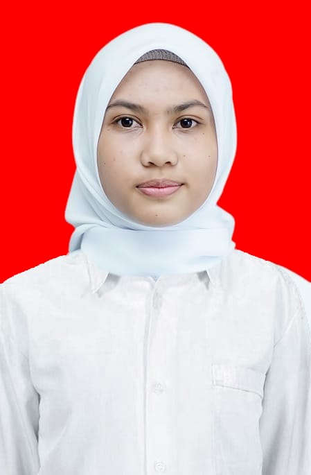

SRI WAHYUNI. SM

Profil
Saya mahasiswa aktif 2023 Universitas Hasanuddin Program Studi Sarjana Fisika semester 4 yang memiliki pengalaman organisasi di bidang kepemimpinan dan sosial masyarakat serta memiliki keinginan untuk mengembangakan komunikasi dan relasi.
Pendidikan
SMAN 7 SIDRAP
Agustus 2020 - Mei 2023
- Jurusan Matematika dan Ilmu Pengetahuan Alam
Universitas Hasanuddin
Agustus 2023 - Present
- S1-Fisika Fakultas Matematika dan Ilmu Pengetahuan Alam
Pengalaman Kepanitiaan/Organisasi
Fasilitator Forum Anak Daerah Nene Mallomo Sidrap
Juni 2023 - Agustus 2025
- Membimbing pengurus dalam melaksanakan program kerja.
- Mengawasi pengurus dalam melaksanakan program kerja.
- Memberikan solusi terhadap kendala yang terdapat dalam suatu kondisi.
Ikatan Pelajar Mahasiswa Indonesia Sidrap Kec. Pituriawa
Juni 2024 - Present
- Membantu kegiatan kader tingkat lanjut untuk kepengurusan selanjutnya.
- Melakukan kegiatan sekolah institusi sebagai bekal pengenalan ke jenjang lanjutan.
Go Teaching 8
Agustus 2024
- Membuat anggaran belanja yang diperlukan selama kegiatan.
- Mengkoordinir penggalangan dana sebagai sumber dana.
- Mempersiapkan logistik selama kegiatan
Green Generation Indonesia
Januari 2024
- Menangani kendala yang terjadi pada peserta.
- Sebagai pengingat jadwal kegiatan kepada peserta
Ikatan Pelajar Mahasiswa Indonesia Badan Koordinasi Perguruan Tinggi Universitas Hasanuddin
Mei 2025 - Present
- Melakukan kajian isu-isu strategis yang berkaitan dengan mahasiswa maupun masyarakat.
- Mengawal dan melakukan advokasi terhadap aspirasi mahasiswa/masyarakat melalui dialog.
Pengalaman Kerja/Magang
Kelompok Penyelenggara Pemungutan Suara Pemilihan Umum
Januari - Februari 2024
- Memastikan kebenaran dan kualitas segala perangkat pemungutan suara.
- Menginput hasil pemungutan suara pada aplikasi SiRekap.
- Mencatat kembali C-Salin.
Magang Mandiri PT Sucofindo
Juli - Agustus 2025
- Mampu bekerja dengan cermat dan teliti untuk menjaga akurasi hasil kalibrasi.
- Mampu menyusun laporan evaluasi dan dokumentasi teknis secara sistematis sesuai kebutuhan kalibrasi.
- Terampil mengidentifikasi permasalahan teknis serta memberikan rekomendasi berbasis data pada proses pengukuran.
Pencapaian
- Pendanaan Program Kreativitas Mahasiswa Bidang Kewirausahaan
Instagram PKM
Other
Terima kasih